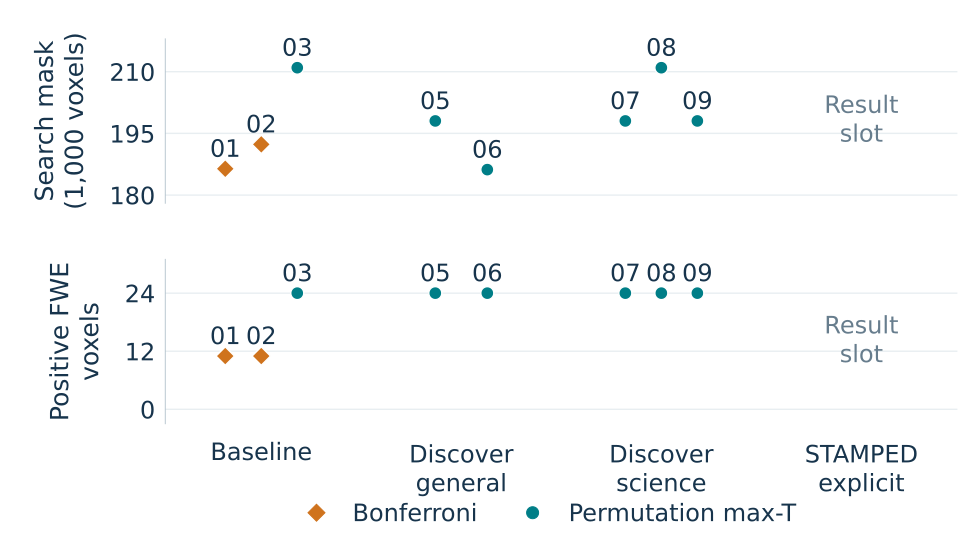

US-RSE 2026 · Research in the open
STAMPED in PracticeImproving research skills through
reproducible experiments
 Poster + code
Poster + codeOur experiment: iteratively improve STAMPED research skills by validating the scientific results and research objects they produce.
Make the improvement process inspectable.Link the skills, data, runs, assessments and revisions, so others can evaluate both the science and how the guidance evolved.
01 · Experiment
Test the skills through the work
We ask whether successive revisions improve scientific adequacy and reproducibility, while reducing failures and variability.
- RunFresh agents address the same scientific question.
- AssessIndependent judges inspect the research object and attempt replay.
- ReviseUse recurring findings to improve and compress the skills.
- RepeatTest the next pinned revision with fresh agents.
Three iterations; four assistance conditions; three research runs per condition. Final iteration: evaluate without further tuning.
Four ways to assist an agent
BaselineNo supplied research skills.
General discoveryFind and use useful skills.
Science discoveryFind skills for scientific quality and reproducibility.
Explicit STAMPEDUse the pinned research workflows.
Matched task, inputs and resources; randomized launch order; three repeats. Record assigned assistance and actual skill use separately. Comparison plan · Run settings
The study is itself a research object
Follow any result back to its source
Ideas for better skills are testable only when we can trace the data generated along the way. stamped-in-practice connects the experiment, including unsuccessful attempts.
STAMPED principles
Self-contained · Trackable · Actionable · Modular · Portable · Ephemeral · Distributable
02 · Scientific results
Reproducing a NARPS analysis
Hypothesis: increasing potential gain increases activity in ventromedial prefrontal cortex (vmPFC) in the equal-indifference group.
We reanalyse 54 participant gain-effect maps from NARPS team AO86. Preprocessing and participant models are fixed; agents choose group inference and report whole-brain-corrected results.
Paper: Botvinik-Nezer et al., 2020 · OpenNeuro data
AO86 contrast maps · Exact scientific task
Group-level gain response

24 posterior voxels survived correction; none overlapped the vmPFC region. Bilateral AAL medial-orbitofrontal mean coefficient −0.0079, 95% CI [−0.0346, 0.0188], in the supplied model’s units.
How much do analyses vary?

Use STAMPED. Try the skills. Bring us a study.
Share a hypothesis, accessible data and a reference result. Help us test the skills on your science—and discuss what better guidance should do.
 Study + data
Study + data
 Use the skills
Use the skills